Home / The Bourbon Trail / Bourbon Street
DOWNTOWN FRANKFORT
Home / The Bourbon Trail / Bourbon Street
DOWNTOWN FRANKFORT
A 1904 mansion in downtown Frankfort built for Bourbon Trail groups. A speakeasy bar made from barrel lids and live-edge wood, a billiard parlor with an 8' slate table, a poker room, a theater with an 85" TV, an arcade and a piano. Walk to dinner; Buffalo Trace is about five minutes away.
Good to know: All bedrooms and full baths are upstairs.
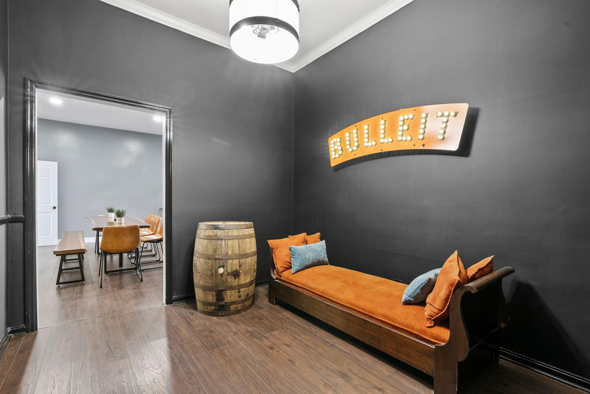
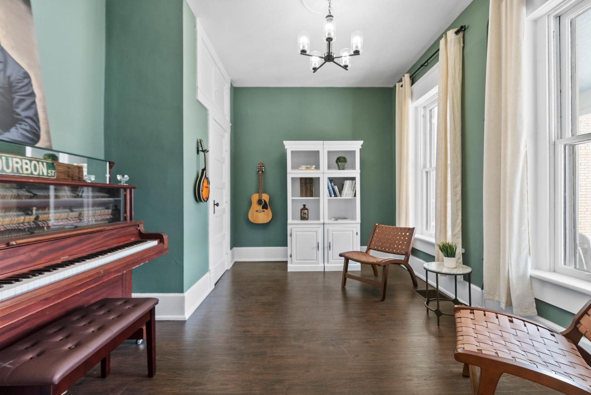
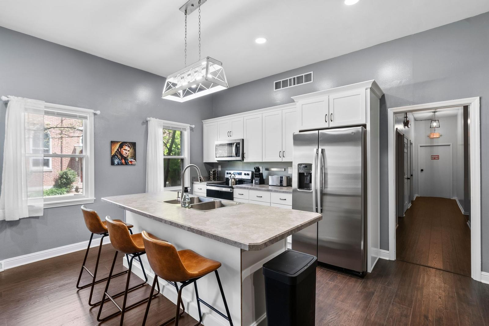
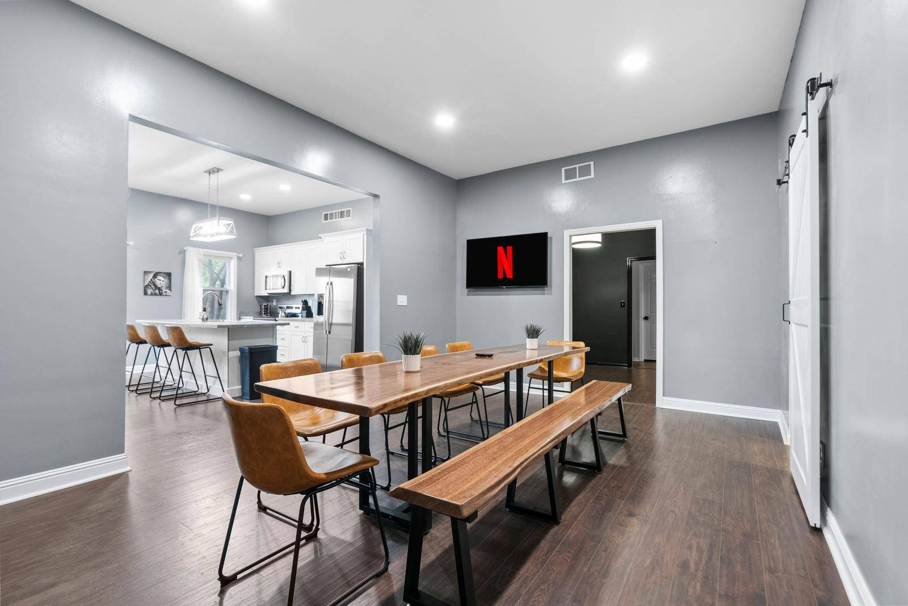
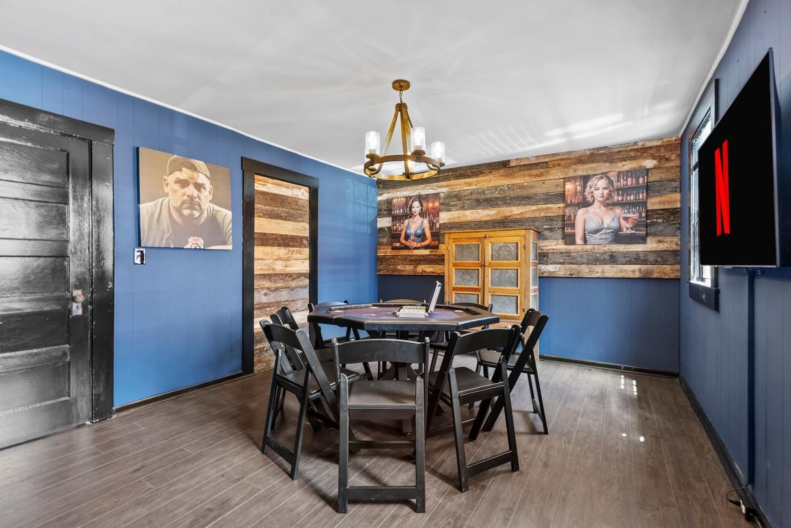
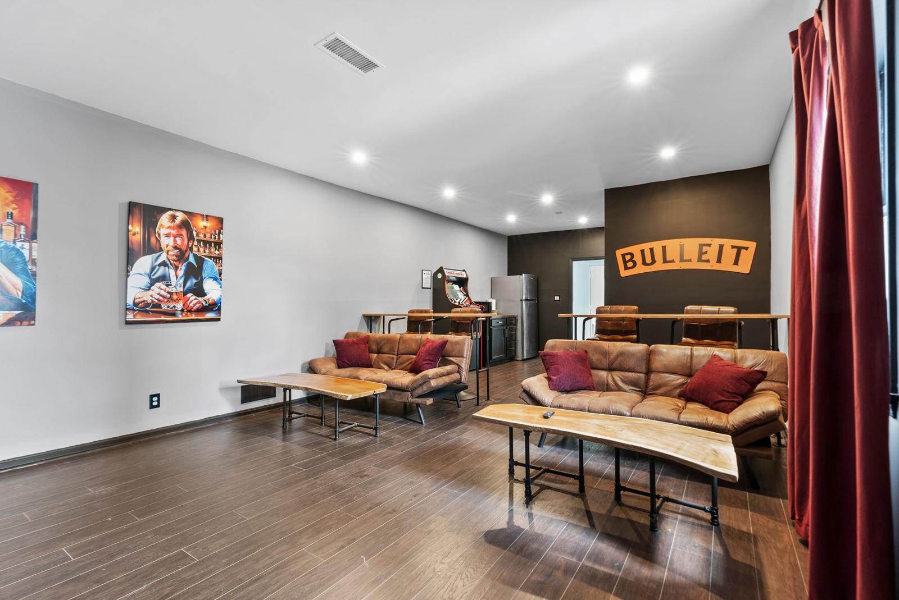
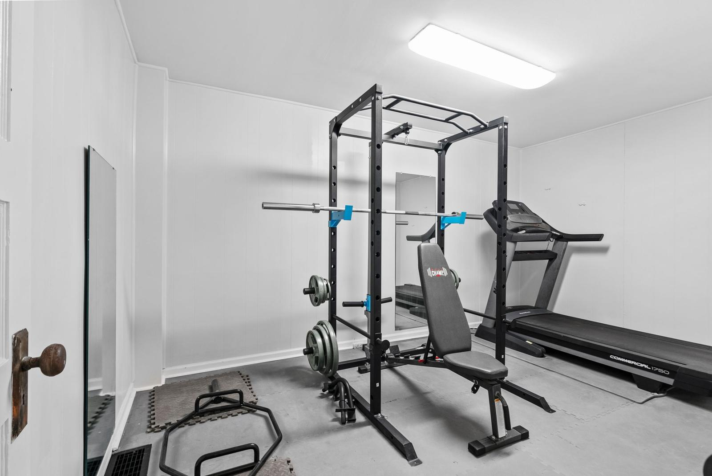
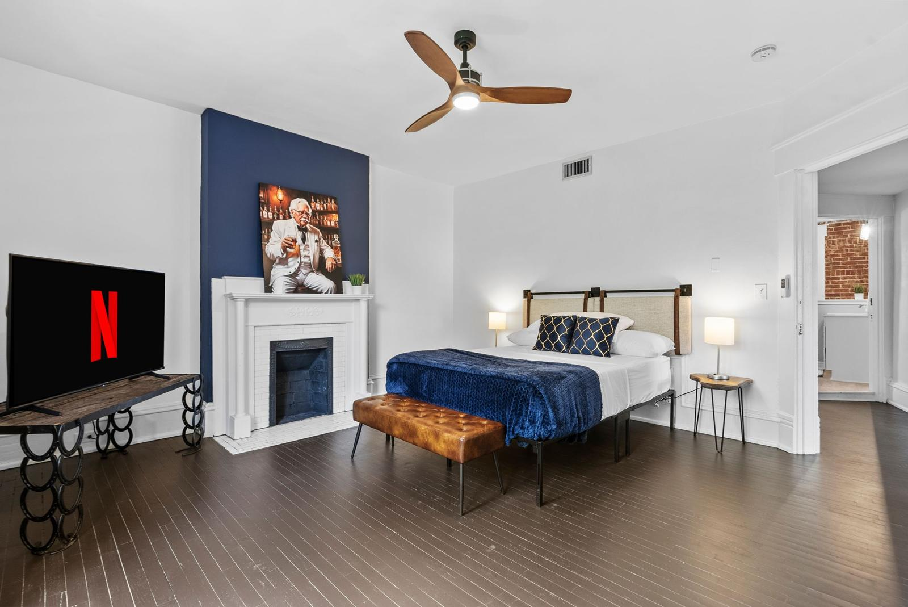
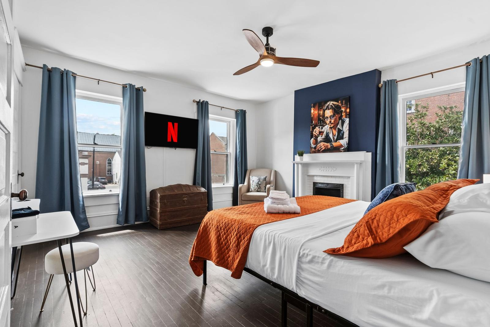
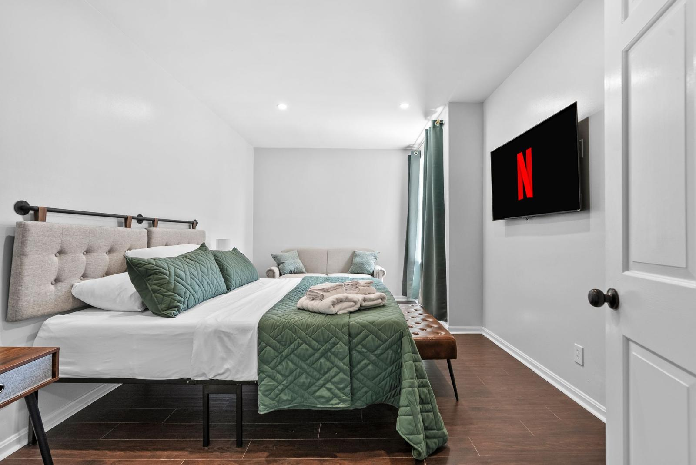
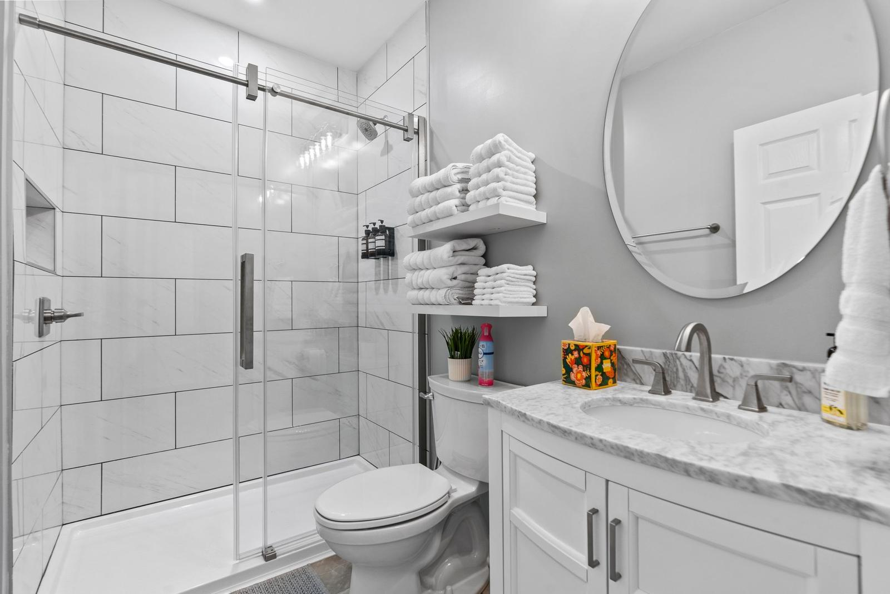
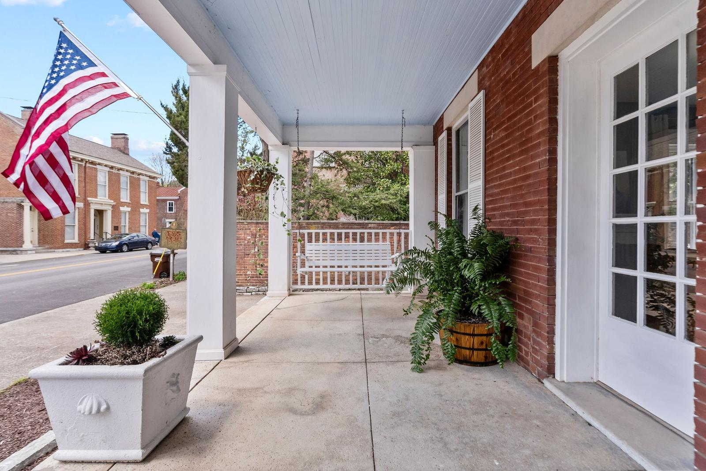
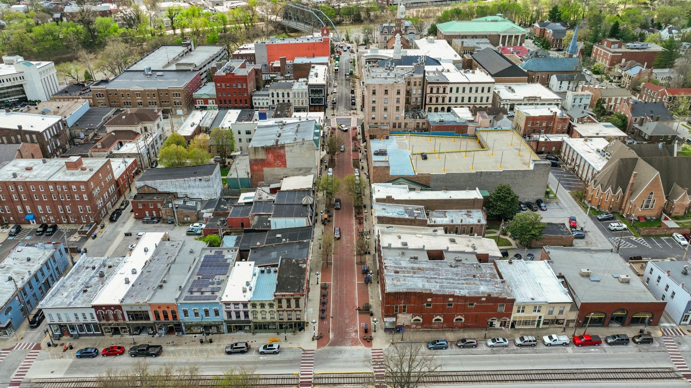
Downtown Frankfort, on Main Street
For your privacy and ours, the exact address and arrival directions are sent after you book.
Self check-in with a keypad. You get directions and your door code 48 hours before arrival.
Lock up, turn things off and log out of any streaming accounts you used. Checkout is 10:00 am.
Up to 14 across 7 bedrooms (4 king, 3 queen) and 3.5 baths.
The driveway fits 2 vehicles. Street parking out front is free nights and weekends, and there is free weekday parking two blocks away on Wilkinson Street.
About 1.5 miles, roughly a 5-minute drive. Downtown restaurants and bars are a short walk.
No pets, please. If you have a service animal, contact us before booking.
Yes. If you only need the first two floors (5 bedrooms), we can close off the third floor and discount the rate. Ask us for details.
Cancel at least 30 days before check-in for a full refund. Cancel 7 to 30 days before check-in and 50% of the nightly total is refunded. Cancellations less than 7 days before check-in are non-refundable.
“Great visit. Perfect for the Bourbon Trail. Our group of 8 enjoyed all the amenities and appreciated the cleanliness and the location in the middle of Frankfort. Would highly recommend for a group trip.”
“The house worked well for our group of 8. We enjoyed the pool table, bar and home gym. The location downtown was wonderful and we were able to walk to the restaurants and bars nearby. I would highly recommend this house for anyone visiting.”
“Shane's place is very close and walkable to downtown Frankfort. Easy parking and access to the rental. More spacious than the photos give it credit. Rooms and bathrooms were clean and Shane was always responsive.”
MORE IN THE BOURBON TRAIL
BOOK DIRECT PERK
Book on our site and get a complimentary early check-in or late checkout, up to 2 hours, when available. Same homes, same hosts, no booking-site service fee.